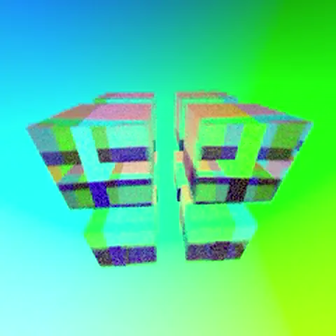
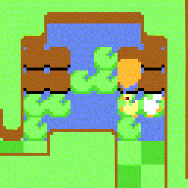
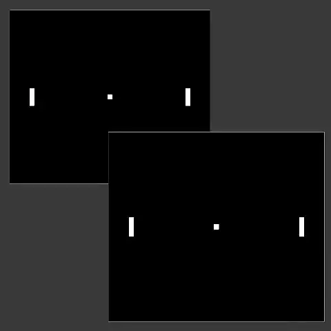

Programmer specializing in low-level, performant game code
Over the years I've built a SIMD accelerated CPU path tracer in x86 assembly, a complete retro arcade game, a networked implementation of Pong featuring client-side prediction and server reconciliation, and a 3d space shooter prototype featuring a custom asset packing pipeline using Xlib and OpenGL.
I'm delighted by both hardware and software, and I spend my time trying to get the two to play nice together. I believe in coding with minimal sophistication, minimal dependencies, and an imperative, data oriented style.
Read my blog, shoot me an email, skip to the site index, or keep reading to learn more about my recent projects.

I wrote this in a little over a month as a learning project oriented around understanding x86 assembly, the CPU, and performance optimization generally. I achieved the following goals:
Supported SSE 4.2 SIMD instructions: 128 bit xmm registers allowed me to implement 3D algorithms with single instructions per vector operation.
Created an automatic profiling process: I wrote a set of shell scripts to automatically build the project with different parameters and graph the results to find the optimal settings for varying performance targets.
Modeled dielectric materials, motion and focal blur: I implemented a refractive glass material, sampled across time to produce motion blur, and sampled a unit disk around the camera origin for focal blur.
Achieved realtime performance: As of now, I can render a grid of 8 cubes at 480x480 pixels and 4 samples per pixel at a steady 60 fps. Tested on a relatively low powered laptop CPU: AMD Ryzen 5 PRO 8540U at 3.2 GHz.
Planned future improvements include reducing intersection tests with a bounding volume hierarchy and implementing an AVX-512 codepath utilizing a wavefront approach used in state of the art renderers.

LowRez is a 2 week long game jam with a 64x64 resolution constraint. I was interested to see what I could accomplish in a custom C codebase, and I managed to do the following:
Supported both native Linux and the web: Prior to this project, I built only for Linux using the Xlib, ALSA, and OpenGL. I added Emscripten and SDL 2 support, relying on the magic of Emscripten's system to adapt OpenGL calls to WebGL.
Prototyped a complex control scheme: The initial idea for the design was Frogger meets Snake. Design and implementation proved more complex than I had considered, with all sorts of ambiguities to work out, mostly involving moving platforms. After lots of tinkering, I think I landed on something satisfying.
Stress tested my csm_core library: I've been building up a core of utility code which I use as the baseline for all my new projects, with helpers for memory allocation, asset packing pipelines, file processing, math, and more. This was a good stress test, with lots of notes made for improvement.
I'm proud of what I accomplished given the time frame, writing ~4800 new lines of C code, ~25 small puzzle screens, and a number of bespoke mechanics and minigames which unfold as the game progresses.

I started writing this with the eventual goal of making a faster paced multiplayer 3D mech game, and my approach was consequently much more ambitious than if I was just making a Pong clone. Though I still haven't started work on that more complex game, I did achieve the goals I set out with for this proof of concept, including:
Implemented client-side prediction and server reconciliation: Prioritizing a robust and smooth experience, I ended up with something heavily inspired by the approaches of both Overwatch and Rocket League, with a fixed timestep, client side prediction of both local and remote players, and server reconciliation.
Wrote a custom UDP transport layer: I worked directly with Unix sockets to support a range of features including bit packing of network packets, user/session management, debug network visualizations, detailed frame logging, and tools for simulating varying network latency and packet loss.
Supported a range of network configurations: The server can run standalone or client hosted, with support for fully local play and bot players. Sessions can support any combination of player types, be they hosts, clients only, or bots.
I am still intending to write a more complex multiplayer game using this general approach, though that project has been placed on the back burner for now.
csm_core, 2026: C helper library for 3D math, asset packing, format processing, windowing, rendering, and more
Ceres, 2026: Asteroids inspired 3D game prototype in a custom data-driven engine
Submarine, 2026: Multiplayer 3D voxel grid game inspired by Battleship
Hypervis, 2025: Website using WebGL to visualize data on a 3D voxel grid
Vulkan Renderer, 2025: Written in C and supporting simple textured meshes
Panelpon, 2025: Work in progress arcade puzzler inspired by Panel de Pon
Pigeon, 2025: Website written in Go providing an artificially slow email service
Cicero, 2024: Compiled language written in C and targeting x86 assembly
Caravan, 2024: Minimalist trading sim written in 48 hours
Crumble King, 2024: Retro arcade game written in Odin and released on itch.io
Zig Renderer, 2023: CPU rasterizer written in Zig
Website by me, 2026. Art by Hannah Rants.